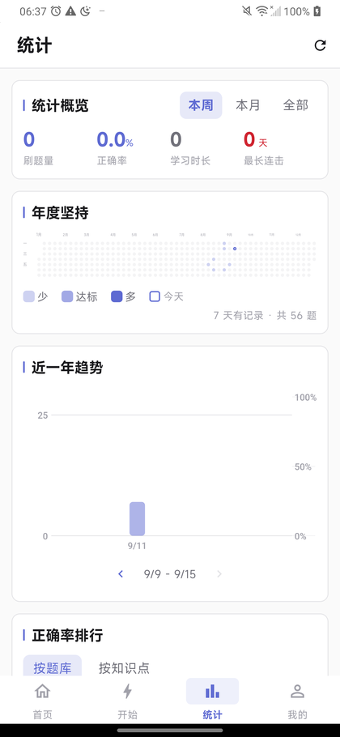
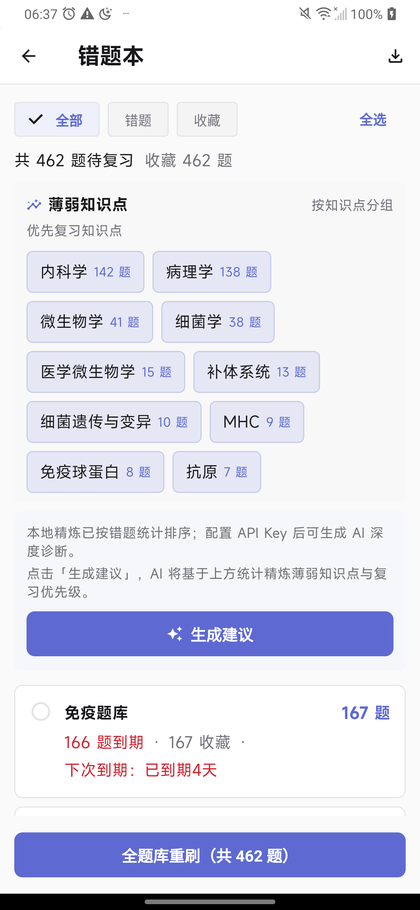

题库导入
DOCX / PDF / JSON；PDF 插图随题保留
本地优先的 AI 备考刷题工具。题库文档导入，AI 切题入库，七种题型判分，FSRS-5 排复习。数据不出设备。
备用渠道：GitHub Releases
终端演示：maojuan import 2026真题.docx，切题 … 132 题 · 插图 18 张随题保留，入库 ✓ — 输入 maojuan start 开刷；maojuan import 习题集.pdf，切题 … 87 题 · 插图 6 张随题保留，入库 ✓；maojuan import 题库.json，直入库 … 240 题，开刷。
DOCX / PDF / JSON；PDF 插图随题保留
各判定逻辑独立
BYOK，题眼破题法
遗忘曲线排期
题量 / 正确率 / 年度热力图
三种笔，按题保存
同 Wi-Fi 设备对齐，不走云
AES-256-GCM
| 输入格式 | DOCX / PDF / JSON |
|---|---|
| 题型 | 7 种（单选 多选 判断 填空 名解 简答 问答） |
| 解析引擎 | BYOK · OpenAI 兼容接口 |
| 复习算法 | FSRS-5 |
| 数据存储 | 本地 SQLite · 可选局域网同步 |
| 备份 | AES-256-GCM 口令加密 |
| 平台 | Android 6.0+ / Windows 10+ |
| 离线能力 | 刷题 · 判分 · 统计 · 复习全离线 |
| 许可 | AGPL-3.0 |
| 测试 | 378 项自动化 |
| 版本 | v1.28.1 |



完全免费，无账号无会员无广告。
全在你自己设备（SQLite）；同步也只在局域网设备之间。
导入 DOCX/PDF 与 AI 讲解要（自己的 Key，OpenAI 兼容）；JSON 导入、刷题判分、统计、复习不要。
更多信息 → 仍要运行。
PowerShell 里执行，与 SHA256SUMS.txt 比对：
Get-FileHash .\MaoJuan-… -Algorithm SHA256Android 6.0+（含）/ Windows 10 64 位。